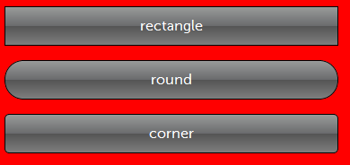
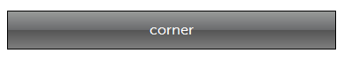
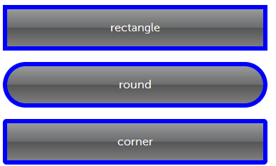
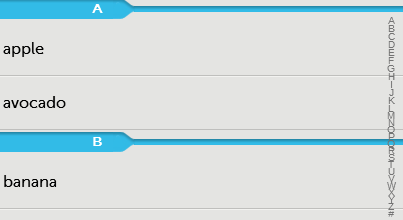
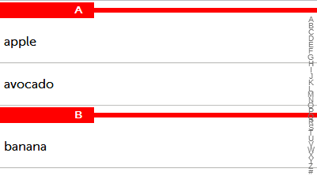

Mobello에서는 앱의 전체적인 Look & Feel을 적용하기 위한 테마를 제공합니다. 미리 제공되는 테마는 default, simple, ios가 있습니다.
사용자가 미리 제공되는 테마에 대해 수정하기 위해서 CSS를 직접 건드릴 필요 없습니다.
Mobello에서는 Sass & Compass를 통해서 쉽게 CSS에 대한 지식 없이도 전체적인 배경색, 버튼의 크기, gradient, shadow, radius 등 Mobello가 정의한 변수에
값을 설정하거나, 자주 사용하는 스타일 룰을 정의한 mixin를 이용해서 간단하게 변경할 수 있습니다.
목차:
Mobello는 CSS를 관리하지 않고 scss 파일을 관리하고 있습니다. 그 이유는 Sass에서 지원하고 있는 다음 기능을 활용해서 테마를 쉽게 관리하고, 테마를 적용하기 위해서 입니다.
- variables : 변수를 선언해서 스타일 속성값에 설정할 수 있습니다. 변수를 사용할 경우에 변수를 사용하는 스타일에 대한 값을 일괄적으로 적용할 수 있습니다.
- nesting : 중복되는 셀렉터를 쓰지 않고 하위에 셀렉터를 추가하면 자동으로 셀렉터를 붙여줍니다. 스타일 룰을 구조화하기 용이합니다.
- mixin : mixin로 정의한 내용이 스타일 룰에 추가할 수 있습니다. 자주 사용하는 스타일 룰을 정의해서 마치 함수를 사용하는 것과 같이 사용할 수 있습니다.
- selector inheritance : 스타일 룰을 상속할 수 있습니다. 상속을 사용할 경우에 CSS파일 크기를 줄일 수 있는 장점이 있습니다.
다음은 variables에 대한 예제입니다.
$blue, $maring이라는 변수를 정의한 후에 CSS 스타일 룰에서 해당 변수를 사용하였습니다.
$blue: #3bbfce;
$margin: 16px;
.content-navigation {
border-color: $blue;
}
.border {
padding: $margin / 2;
border-color: $blue;
}
다음은 SCSS파일을 컴파일해서 최종 CSS파일이 생성된 것입니다.
/* CSS */
.content-navigation {
border-color: #3bbfce;
}
.border {
padding: 8px;
border-color: #3bbfce;
}
Compass는 Sass로 작성된 것으로 자주 사용되는 스타일 패턴을 mixin로 제공하고 있습니다.
특히 스타일 룰에 대해 cross browsing에 대한 이슈, 최신 CSS3에 대한 지원에 대해 일일이 CSS로 작성하지 않아도 Compass에서 제공하는 mixin를 이용하면 쉽게 적용할 수 있습니다.
tau.scss

Mobello 테마는 lib > resources > scss > themes 하위에 위치하고 있습니다.
tau.scss파일에서는 변수값을 설정하거나 직접 CSS 스타일 룰을 정의할 수 있습니다.
$enable-gradient: false;
$enable-border-radius: false;
$enable-box-shadow: false;
...
@import '../../lib/all';
...
.custom {
height: 100px;
width: 100px;
}
@import '../../lib/all'를 기준으로 위에서는 변수에 값을 설정하고,
@import '../../lib/all'를 기준으로 밑으로 CSS 스타일 룰을 직접 추가할 수 있습니다.
tau.scss compile
tau.scss를 변경하고 나면 컴파일 과정을 통해 tau.css 파일을 생성해 보도록 하겠습니다. 여기서는 테마를 컴파일 하기 위해 필요한 라이브러리들이 설치되어있다고 가정하고 설명하겠습니다.
 | 테마를 컴파일 하기 위해서는 tau.scss 파일을 컴파일 하기 위해서는 먼저 ruby, sass, compass가 설치되어야 합니다. 다음 문서를 참고하시기 바랍니다. |
컴파일이 완료되면 lib > resources > themes > 수정한 테마 폴더에 tau.css 파일이 생성됩니다.

global variables 값 설정하기
Mobello에서는 전역변수를 설정해서 공통적으로 적용할 수 있는 스타일을 정의하였습니다.
이 문서에서는 컨테이너의 배경색 설정, gradient, border-radius 값을 변경해서 간단하게 테마를 수정해서 적용해 보도록 하겠습니다.
컨테이너 배경색 변경
다음과 같이 기본 컨테이너의 배경색과 텍스트 색상을 설정할 수 있습니다.
$default-container-bgcolor: red;
$default-container-color: white;
|  |
gradient, border-radius 값 변경
$enable-border-radius: false;
|  |
$enable-border-radius: true;
$default-border-radius: 1.2em;
| |
component variables
Mobello에서는 컴포넌트 변수를 설정해서 컴포넌트에 대해 적용할 수 있는 스타일을 정의하였습니다.
버튼 컴포넌트 변수값 수정하기
$button-height: 64px;
$button-border: 6px solid blue;
|  |
테이블 컴포넌트 변수값 수정하기
다음은 섹션 헤더에 해당하는 색을 변경하고, 테이블의 배경색을 변경하는 예제입니다.
$enable-box-shadow: false; // 섹션 헤더에 적용되어 있는 box-shadow를 사용하지 않는다.
$tablesection-bgcolor: red; // 섹션 헤더 색을 변경한다.
$table-bgcolor: white; // 테이블 배경색을 변경한다.
|   |